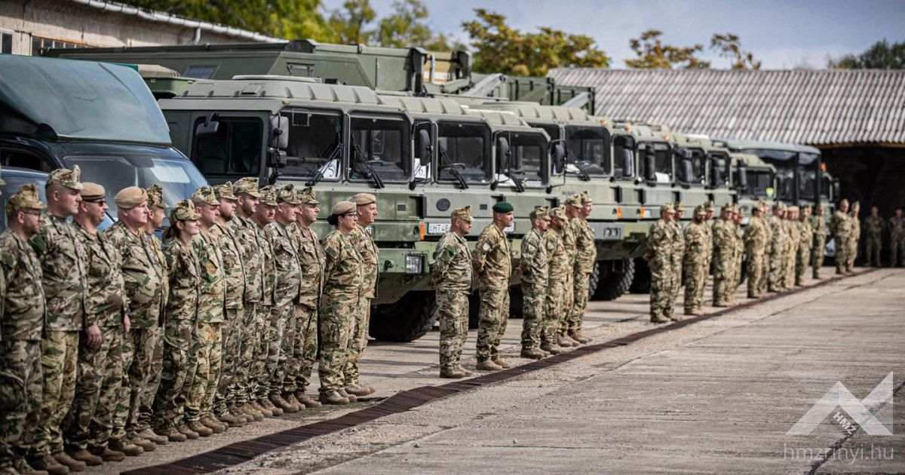

Magyar Honvédség II. Rákóczi Ferenc 14. Műszaki Ezred

RENDELTETÉSE
Az ország fegyveres védelmében résztvevő összfegyvernemi, valamint szövetséges védelmi erők harctevékenységének műszaki támogatása.
A szövetségesi és nemzetközi szerződésekből eredő egyéb katonai kötelezettségek teljesítése, kollektív védelmi, békeműveleti és humanitárius feladatok végrehajtása, a feladatokban való részvétel.

FŐ FELADATOK, KÉPESSÉGEK
- Lövész zászlóaljak, zászlóalj harccsoportok harcának közvetlen műszaki támogatása;
- Híd-és deszantátkelőhelyek berendezése, fenntartása;
- Útépítési feladatok végrehajtása;
- Erődítési, álcázási feladatok;
- Vezetési pontok berendezése;
- Meglévő infrastruktúrák (áram, víz, energia, közművek) helyreállítása és karbantartása;
- Víztisztítás;
- Anyagelőkészítés (fakitermelés, feldolgozás);
- Műszaki felderítés;
- Részvétel a Honvédelmi Katasztrófavédelmi Rendszer feladataiban;
- Részvétel Befogadó Nemzeti Támogatás feladataiban.
TÖRTÉNET
A jelenlegi Damjanich-laktanya területét Szentes városa 1931-ben adományozta a honvédségnek, amelyet 1935-ben a Pápáról áthelyezett Simonyi Óbester Huszárezred egy huszárosztálya vett birtokba. A második világháború után különböző fegyvernemi alakulatok és szakcsapatok, de főleg műszaki katonák állomásoztak a laktanyában.
A helyőrségben 1991-től csak műszaki szakcsapatok teljesítenek szolgálatot.
- 1991. augusztus: 87. Műszaki Technikai Ezred;
- 1997. március 01-én a szegedi, szentesi és ercsi műszaki alakulatok jogutódjaként létrejött az MH 37. II. Rákóczi Ferenc Műszaki Dandár;
- 2007. március 1-én a dandár szervezetének felszámolása után megalakult az MH 37. II. Rákóczi Ferenc Műszaki Zászlóalj;
- 2010. június 15-én az alakulat a szervezeti változást követően MH 37. II. Rákóczi Ferenc Műszaki Ezred néven tevékenykedett;
- 2023. január 01-től az alakulat kibővült feladatrendszerrel az MH II. Rákóczi Ferenc 14. Műszaki Ezred néven kezdte meg feladatai ellátását.
Bár a Szentesen települt ezred az évtizedek folyamán számos alkalommal esett át a szervezetét érintő változáson, az alaprendeltetése mindvégig az Magyar Honvédség csapatainak műszaki támogatása volt. A jelenlegi korszerűsítéssel azonban alaprendeltetésből adódó feladatait hatékonyabban képes végrehajtani.
CSAPATÜNNEP
Július 14. Az ünnep aktualitását a II. Rákóczi Ferenc fejedelem által vezetett szabadságharc első győztes csatája adta, amely 1703. július 14-én a Tiszabecs település határában zajlott a kurucok és a császári csapatok között. A jeles történelmi esemény eredményeképp II. Rákóczi Ferenc fejedelem seregének sikerült a Tisza bal partjára átkelnie, így mozgalma ezzel a csatával vált az egész országra kiterjedő szabadságharccá.

ELÉRHETŐSÉGEK
Cím: 6600 Szentes, Csongrádi út 108.
Postacím: 6600 Szentes, Pf.: 62.
Telefon: (+36)-63/510-700
Fax: (+36)-63/510-710
HM-tel.: 02-42/41-21
HM-fax: 02-42/41-00
Email: mh.14mue@mil.hu